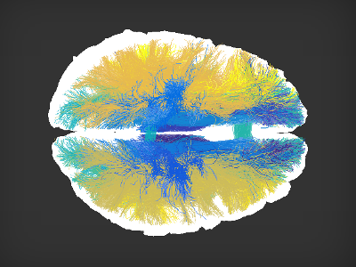
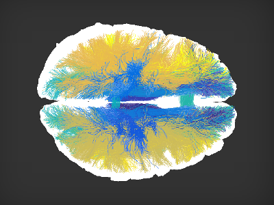
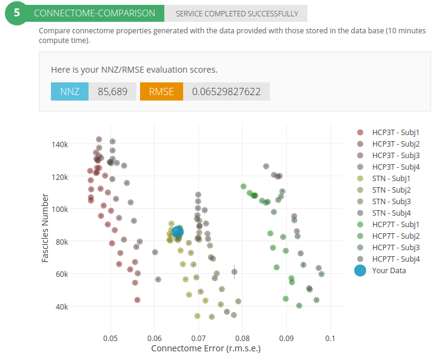

Brain tractography uses diffusion-weighted MRI measurements from living humans to generate large collections of white-matter fascicles; the connectome. connectome mapped in individual brains can be used to study the properties of the human brain connections as well as those of the white matter tissue. These properties can be used to chart variability across individuals for multiple biological processes, such as development, aging as well as disease progression.
To date, several tractography methods and diffusion data types exist and often times investigators have no principled ways to choose among the many options.
We provide a few quantitative estimates of connectome quality, given a sample data set provided by an investigator. This service takes as input Diffusion-weighted MRI data (DWI) and T1-weighted anatomical data and returns as output a full brain connectome mapped with modern tractography methods.

We also provide a few quantitative measures to inform the investigator the quality of the expected results that can be achived with such data. We compare the results to those optained with a few sample subjects from the human connectome data, the Stanford data set.